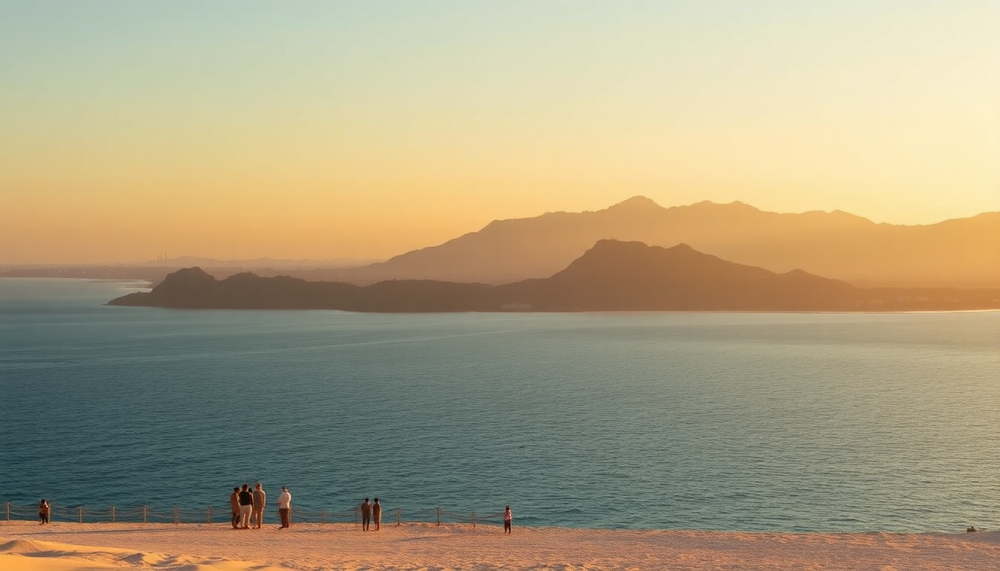

10-Day Maldives Itinerary: Malé, Baa & Ari Atolls

I landed in Malé thinking the Maldives was just overwater bungalows and honeymoon resorts. Ten days later, after bouncing from a guesthouse in Malé to a local island in Baa Atoll and a liveaboard in Ari Atoll, I realized the country is far more layered. This itinerary covers three distinct zones without breaking the bank—or your patience with seaplane logistics.
Is Malé worth a full day, or should you skip straight to the atolls?
Most people treat Malé as a transit hub. I’d say give it one day—but no more. The capital is cramped, chaotic, and surprisingly walkable. We landed at Velana International Airport, grabbed the public ferry to Malé (MVR 10, about 65 cents), and checked into Somerset Inn near the waterfront. It’s functional, not fancy, but the rooftop breakfast with a view of the harbor is solid.
- Friday Mosque (Hukuru Miskiy): Built in 1656 from coral stone. Free entry, but cover your knees and shoulders.
- Malé Fish Market: Go late afternoon when the catch comes in. The smell is intense, but the energy is real. No one will hassle you to buy.
- Local Bus No. 1: Runs a loop past the artificial beach and Sultan Park. Costs MVR 5. Don’t expect air conditioning.
- Seagull Café: A decent lunch spot for mas huni (shredded smoked tuna with coconut) and short eats. Avoid the tourist cafes near the jetty—they charge triple.
We ate dinner at The Sea House, a rooftop restaurant overlooking the port. The grilled reef fish was fresh, but the service was slow. That’s Malé: real, not polished.
What’s the best way to reach Baa Atoll from Malé?
The standard advice is a seaplane (30 minutes, $400+ per person). We took the public ferry instead. The Malenave runs between Malé and Thulusdhoo twice daily, then you transfer to a local dhoni to Dharavandhoo in Baa Atoll. Total cost: about $25 per person. Time: 5 hours. It’s not fast, but you’ll share the deck with locals, see tuna jumping, and pass uninhabited islands.
- Dharavandhoo: The main island in Baa Atoll where guesthouses cluster. No resorts here—just family-run stays.
- Baa Atoll Guesthouse: We paid $60 a night for a clean room with AC and breakfast. The owner, Ahmed, arranged a reef snorkeling trip for $30.
- Hanifaru Bay: A protected UNESCO site where manta rays gather from June to November. We went in late October and saw 12 mantas in one hour. Entry is $10, plus a $30 permit. Don’t skip this.
- Local ferry to Maalhos: Every other day at 8 AM. Takes 45 minutes. Maalhos has a nice bikini beach (unlike Dharavandhoo, where you swim in a sarong).
We ate dinner at Sham’s Kitchen on Dharavandhoo—curry tuna with rice and a side of pickled onions for $5. The owner’s son runs a small snorkel gear rental shack next door. Rent fins and a mask for $5 a day instead of paying tour operators.
How do you get from Baa Atoll to Ari Atoll without a seaplane?
This is the tricky part. There’s no direct ferry. We booked a two-night liveaboard with Maldives Dive Travel that picked us up at Rasdhoo in Ari Atoll. The boat cost $150 per person per night, including meals and three dives daily. They arranged a speedboat transfer from Dharavandhoo to Rasdhoo for $50.
- Rasdhoo: A local island with a handful of guesthouses and a small beach. We stayed at Rasdhoo View Inn for one night before the liveaboard. Basic, but the owner’s wife makes a killer roshi (flatbread) with tuna curry.
- Madivaru Corner: A dive site near Rasdhoo with strong currents and grey reef sharks. We saw a hammerhead at 25 meters. Not for beginners.
- Maafushi: A bigger island in South Male Atoll that we passed on the speedboat. Overdeveloped, in my opinion. Skip it unless you want party hostels.
- Ari Atoll Liveaboard: Our boat had six cabins, a sun deck, and a cook who served grilled lobster one night. The crew knew the best spots for whale sharks—we saw one at Maamigili on day two.
If you don’t dive, you can still take the public ferry from Dharavandhoo back to Malé, then a speedboat to Thinadhoo in Ari Atoll. That route takes a full day and costs about $60. I wouldn’t recommend it unless you’re on a strict budget.
What are the best snorkeling and diving spots in Ari Atoll?
Ari Atoll is famous for whale sharks and manta rays, but the coral health varies. Fenfushi has a house reef that’s degraded—too many sunscreen chemicals. Dhigurah was better, with healthy table corals and a resident turtle we saw three days in a row.
- Whale Shark Point (Maamigili): A marine protected area where whale sharks aggregate year-round. Snorkelers can jump in with a guide. We paid $40 for a half-day trip from the liveaboard.
- Kudarah Thila: A protected reef with overhangs and schools of fusiliers. Strong current; wear a reef hook if you dive.
- Manta Reef (Angaga): A cleaning station at 12 meters. We saw mantas circling like slow-motion fighter jets. Best in the afternoon.
- Bikini Beach (Dhigurah): A long sandbar where you can swim freely. No sarong required. Locals play football here at sunset.
We ate at Manta Restaurant on Dhigurah—grilled snapper with coconut rice and a chili sauce that made my ears sweat. $12. The owner, Ali, also runs a small dive shop next door. He’s honest: if the visibility is bad, he’ll tell you to wait.
Where should you stay in Ari Atoll if you’re not on a liveaboard?
Guesthouses on local islands are the budget option. Resorts on private islands cost 10x more. We spent two nights at Sunset Beach Inn on Dhigurah. $80 a night, including breakfast and airport transfer by speedboat ($50 extra). The room had a mosquito net and a fan—no AC, but the sea breeze was enough.
- Thinadhoo: Quieter than Dhigurah. Ari Beach Hotel has air-conditioned rooms starting at $100. The beach is rocky, so bring water shoes.
- Resort alternative: If you have the budget, Constance Moofushi in South Ari Atoll is all-inclusive with a house reef that rivals Hanifaru Bay. We didn’t stay there, but we snorkeled their reef on a day pass ($100).
- Local tip: Book guesthouses through Booking.com or Agoda, but message the owner directly for a better rate. We saved $20 a night this way.
What’s the cheapest way to get back to Malé from Ari Atoll?
Speedboat transfers from Dhigurah to Malé cost $50–$70 per person and take 2.5 hours. The public ferry from Thinadhoo to Malé runs twice a week (Tuesday and Friday) and costs $15. We took the speedboat because we had an early flight. If you have time, the ferry is fine—just bring snacks and a book.
- MTCC Ferry: The government-run service. Schedules change seasonally, so check the MTCC website before you go.
- Airport transfer: Once in Malé, take the public ferry back to Velana International (MVR 10, every 15 minutes). Don’t take a taxi—they charge $10 for a 5-minute ride.
- Last meal: We ate at Symphony Restaurant near the airport before flying out. The biryani was average, but the falooda (rose milk dessert) was a good send-off.
FAQ
Is the Maldives only for honeymooners on a luxury budget? No. We spent about $1,200 per person for 10 days, excluding flights. Public ferries, guesthouses, and cooking your own rice (guesthouses often have shared kitchens) keep costs low. The resorts are a different world, but you don’t need them.
Do I need a visa for the Maldives? No. Most nationalities get a 30-day visa on arrival, free. Just show a passport valid for at least six months and a return ticket. Immigration in Malé is fast—we waited 10 minutes.
What’s the best time of year for this itinerary? November to April is dry season with calm seas. June to November is wetter but better for manta rays and whale sharks. We went in October and had two days of rain, but the snorkeling was excellent. Avoid May, when the southwest monsoon kicks up strong currents.
Conclusion
- Spend one day in Malé for the fish market and Friday Mosque, then move on—it’s not a beach destination.
- Use public ferries and speedboats instead of seaplanes to save money. The journey is part of the experience.
- Stay on local islands (Dharavandhoo, Dhigurah) for authentic food and lower prices. Guesthouses cost $60–$80 a night.
- Book a liveaboard in Ari Atoll if you dive. It’s the most efficient way to see multiple reefs and whale sharks.
- Pack reef-safe sunscreen, a sarong for local island beaches, and cash (US dollars accepted everywhere, but small bills help).